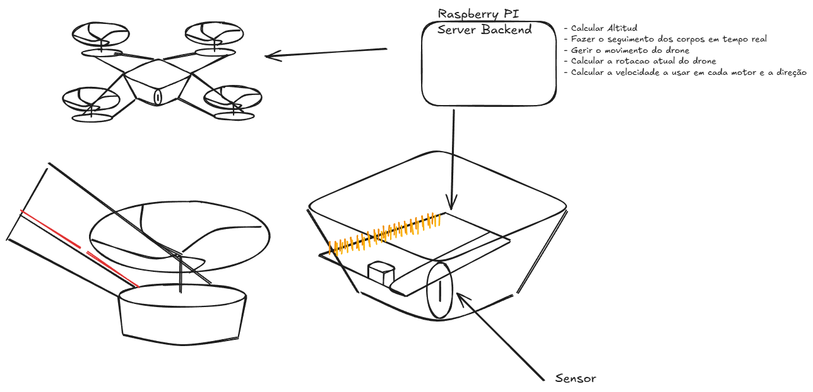

✈ Ornithopter
drone quadcóptero estilo Dune · ESP32 + Raspberry Pi
por Ricardo Alexander, n13 · 11G
A ideia num parágrafo: construir um drone componente a componente, sem kits —
frame X impresso em 3D com carenagem estilo "thopter", 4 motores coreless 8520, cérebro
ESP32 com o firmware open-source ESP-Drone (Espressif) — e uma
Raspberry Pi no chão que vê o drone com uma câmara, calcula altitude, rotação e
velocidade de cada motor, e voa sozinho. Tudo por 44,30 € de um
orçamento de 70 €.
1.O esquema original (à mão)

esquema do criador: drone + RPi Server Backend + sensor · "calcular altitude, seguir corpos, gerir movimento, rotação e velocidade por motor"
Raspberry Pi 4 — Server Backend
(fica no chão, com câmara)
vê o drone → calcula estado → manda comandos
⇊ (Wi-Fi 2,4 GHz · UDP)
Ornithopter (voa)
ESP32 + IMU MPU-9250 · 4× motor 8520
marcador ArUco colado por baixo
2.Como é que o drone é seguido?
A câmara da RPi deteta um
marcador ArUco (quadrado tipo-QR de 4 cm) colado no drone.
De cada imagem a 30 fps calcula-se:
- altitude — o marcador é maior/menor consoante a distância (solvePnP)
- posição x, y — centro do marcador na imagem
- rotação (yaw) — ângulo do quadrilátero
- velocidade por motor — PID externo na RPi manda setpoints; o ESP32 mistura nos 4 motores
não precisa de GPS nem sensores caros — só uma folha impressa! :)
3.Números que provam que voa
| peso total | empuxo | razão | autonomia | loop PID |
|---|
| ~78 g |
~150 g |
2,0× |
6–11 min |
500 Hz |
regra de ouro: empuxo ≥ 2× peso → hover a ~50 % de gás, sobra para manobrar ✓
4.Lista de material + custos
| componente | fornecedor | custo |
|---|
| 4× motor coreless 8520 (24 g empuxo) | AliExpress / Amazon.es | 10,00 € |
| 8× hélice 65 mm CW/CCW | AliExpress | 3,20 € |
| LiPo 1S 450 mAh + carregador USB | Amazon.es / loja RC | 13,50 € |
| IMU MPU-9250 | AliExpress | 4,50 € |
| MOSFETs, resistores, diodos, JST | AliExpress | 2,00 € |
| fio, proto-board, velcro, parafusos, LEDs | loja local / escola | 7,10 € |
| filamento PLA (frame + carenagem) | escola (impressora 3D) | 4,00 € |
| TOTAL (orçamento 70 € → folga 25,70 €) | 44,30 € |
custo 0 € da escola: ESP32, ferro de soldar, cabos, multímetro, Raspberry Pi + câmara (~40 € evitados)
5.Software (open-source, nada inventado)
No drone — ESP32
espressif/esp-drone
firmware oficial da Espressif, portado do Crazyflie · PID interno a 500 Hz · GPL-3.0
6.Segurança
- watchdog: marcador perdido > 1 s → aterra sozinho
- geofence por software (2×2 m, máx. 1,5 m de altura)
- botão EMERGENCY no painel + kill físico na RPi
- primeiros voos amarrados com fio de pesca
- LiPo em saco de fogo; nunca abaixo de 3,3 V